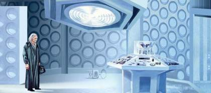

DOCTOR WHO
‘Não, não se trata de uma série médica, mas sim das aventuras de um viajante pelo tempo e espaço junto a uma fiel companheira, sua nave, a TARDIS (Time and Relative Dimension in Space/Tempo e Dimensão Relativos no Espaço).
O Doctor (Doutor), é um Time Lord (Senhor do Tempo) que nasceu no planeta Gallifrey e adora conhecer e explorar as maravilhas do Universo (indo, muitas vezes, além do todo universal).
O Doutor utiliza este nome falso desde sempre, e pouquíssimas pessoas conhecem seu verdadeiro nome.
Ele tem um afeto pela Terra e seus habitantes, o que o leva a geralmente viajar com companheiros humanos, desbravando especialmente, os séculos XX e XXI.
Até então, já houve 11 encarnações deste Time Lord, que enfrentou diversas ameaças à planetas, civilizações inteiras e até mesmo a existência do Universo.
Ele é contra o uso de violência, contudo quando necessário, e a depender da encarnação, pode ser um exímio guerreiro.”
O COMEÇO

Nascido em Gallifrey, ainda jovem o Doctor quebrou a primeira lei de sua raça: a não-interferência.
Seu irmão, Braxiatel teria de apagá-lo da existência, mas resolve dar-lhe a chance de fugir.
Assim, o Doctor rouba uma obsoleta TARDIS Tipo 40 e foge de Gallifrey com sua neta Susan Foreman.
Com dificuldades para controlar a nave, o Time Lord acaba indo para a Terra e lá faz algumas viagens, até fixar-se no século XX.
Durante cinco meses, sua neta frequentou à escola de Coal Hill, onde levanta as suspeitas dos professores Barbara e Ian que decidem falar com seu avô, um homem que não parece gostar de receber visitas.
Os professores seguem Susan e terminam, sequestrados pelo Doctor, dentro da TARDIS.
O Time Lord não os deixa sair, pois desconfia dos professores e crê que eles poderiam anunciar seu segredo.
Ao longo do tempo, vemos a arrogância do Doctor diminuir e sua confiança e o gosto pelos humanos crescerem.
Este gosto pela humanidade e seu planeta, torna-se uma marcante característica do personagem, desde então”.